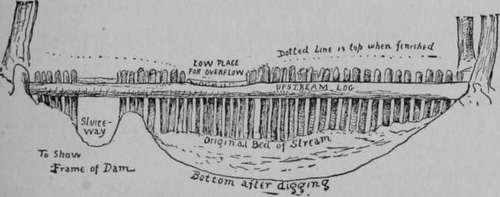
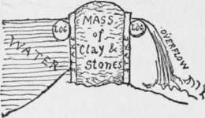

The Planets
Description
This section is from the book "The Book Of Woodcraft", by Ernest Thompson Seton. Also available from Amazon: The Book of Woodcraft.
The Planets
The stars we see are suns like our Sun, giving out light to worlds that go around them as our world goes around our Sun; as these worlds do not give out fight, and are a long way off, we cannot see them. But around our own Sun are several worlds besides ours. They are very near to us, and we can see them by the reflected light of the Sun. These are called "planets" or "wanderers," because, before their courses were understood, they seemed to wander about, all over the sky, unlike the fixed stars.
They are so close to us that their distance and sizes are easily measured. They do not twinkle.
There are eight, in all, not counting the small Planetoids; but only those as large as stars of the first magnitude concern us. They are here in order of nearness to the Sun:
1. Mercury
Mercury is always close to the Sun, so that it is usually lost in the glow of the twilight or of the vapors of the horizon, where it shows like a globule of quicksilver. It has phases and quarters like the Moon. It is so hot there "that a Mercurian would be frozen to death in Africa or Senegal" (Flammarion).
2. Venus
The brightest of all the stars is Venus; far brighter than Sirius. It is the Morning Star, the Evening Star, the Shepherd's Star, and yet not a star at all, but a planet. It has phases and quarters like the Moon. You can place it only with the help of an almanac.
3. The Earth.
4. Mars
The nearest of the other worlds to us. It is a fiery-red planet. It has phases like the Moon.
5. Jupiter
Jupiter, like a very large star of the first magnitude, famous for its five moons, and really the largest of the planets.
6. Saturn
Saturn, noted for its rings, also like a very large star of the first magnitude.
7. Uranus And (8) Neptune
Uranus And Neptune, are too small for observation without a telescope.
The Moon
The Moon is one fifth the diameter of the Earth, about one fiftieth of the bulk, and is about a quarter million miles away. Its course, while very irregular, is nearly the same as the apparent course of the Sun. But "in winter the full Moon is at an altitude in the sky near the limit attained by the Sun in summer, . . . and even, at certain times, five degrees higher. It is the contrary in summer, a season when the Moon remains very low" (F.).
The Moon goes around the Earth in twenty-seven and a quarter days. It loses nearly three quarters of an hour each night; that is, it rises that much later.
"Astronomy with an Opera Glass." Garrett P. Serviss, D. Appleton & Co., New York City. Price, $1.50.
Making A Dam
When I was a boy we had no natural swimming pool, but there was a small stream across our farm; and I with my two friends succeeded in making a pool, partly by damming up the little stream, and partly by digging out the place above the dam.
The first things needed were two logs long enough to reach from bank to bank. These we placed across with the help of the team, and fixed them firmly three feet apart. Inside of each and tight against it we drove a row of strong stakes leaving a gap or sluiceway for the water to run until the rest of the dam was finished.
This cribbing we now filled with clay dug out of the bed of the brook above the dam. Hammering it down hard, and covering the top with flat stones. Finally we closed up the sluiceway with stakes and clay like the rest of it, and in one night the swimming hole filled up. Next morning there was a little cataract over the low place I had purposely left for an overflow. The water was four feet deep and many of us there learned to swim.

Continue to:
Tags
bookdome.com, books, online, free, old, antique, new, read, browse, download